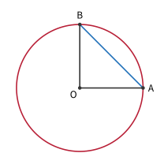
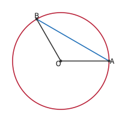
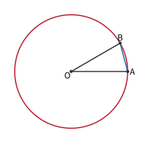

ホーム ＞ 数学II ＞ 一般角と三角関数のグラフ
別冊練習問題 6 の解答 弓形の面積（扇形 − 三角形）
(1) 半径 \(4\)、中心角 \(\dfrac{\pi}{2}\) の扇形 \(OAB\) について、弦 \(AB\) と弧 \(AB\) で囲まれた部分（弓形）の面積を求めよ。
扇形の面積
中心角 \(\dfrac{\pi}{2}\)、半径 \(4\)。
\[\dfrac12r^2\theta=\dfrac12\cdot4^2\cdot\dfrac{\pi}{2}=4 \pi\]
三角形 OAB の面積
\[\dfrac12r^2\sin\theta=\dfrac12\cdot4^2\cdot1=8\]
引いて弓形
\[4 \pi-8=-8 + 4 \pi\]【答案】
\[-8 + 4 \pi\]答
(2) 半径 \(8\)、中心角 \(\dfrac{2 \pi}{3}\) の扇形 \(OAB\) について、弦 \(AB\) と弧 \(AB\) で囲まれた部分（弓形）の面積を求めよ。
扇形の面積
中心角 \(\dfrac{2 \pi}{3}\)、半径 \(8\)。
\[\dfrac12r^2\theta=\dfrac12\cdot8^2\cdot\dfrac{2 \pi}{3}=\dfrac{64 \pi}{3}\]
三角形 OAB の面積
\[\dfrac12r^2\sin\theta=\dfrac12\cdot8^2\cdot\dfrac{\sqrt{3}}{2}=16 \sqrt{3}\]
引いて弓形
\[\dfrac{64 \pi}{3}-16 \sqrt{3}=- 16 \sqrt{3} + \dfrac{64 \pi}{3}\]【答案】
\[- 16 \sqrt{3} + \dfrac{64 \pi}{3}\]答
(3) 半径 \(6\)、中心角 \(\dfrac{\pi}{6}\) の扇形 \(OAB\) について、弦 \(AB\) と弧 \(AB\) で囲まれた部分（弓形）の面積を求めよ。
扇形の面積
中心角 \(\dfrac{\pi}{6}\)、半径 \(6\)。
\[\dfrac12r^2\theta=\dfrac12\cdot6^2\cdot\dfrac{\pi}{6}=3 \pi\]
三角形 OAB の面積
\[\dfrac12r^2\sin\theta=\dfrac12\cdot6^2\cdot\dfrac{1}{2}=9\]
引いて弓形
\[3 \pi-9=-9 + 3 \pi\]【答案】
\[-9 + 3 \pi\]答